Biblioteca de Santa Cruz do Rio Pardo


|
|
|||||||||||||
|
|
 |
 |
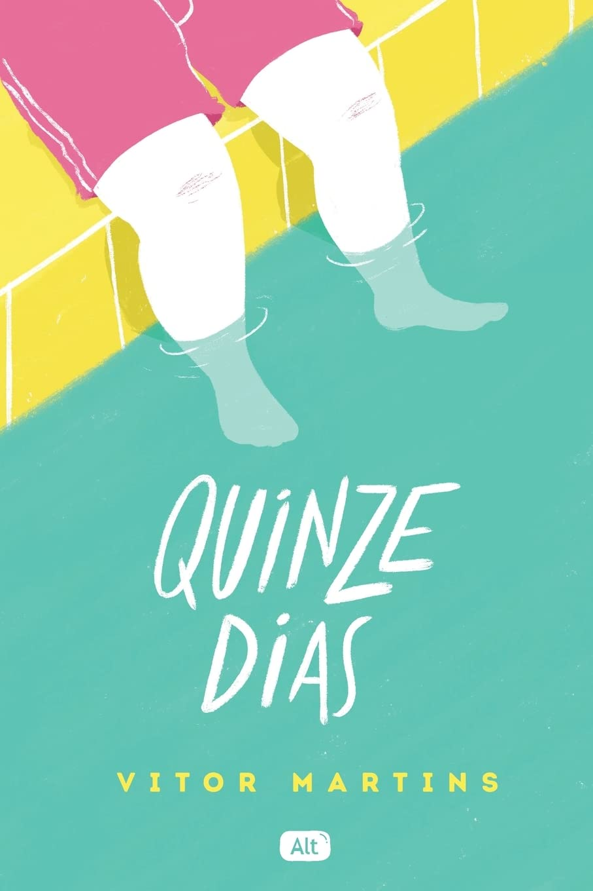 | 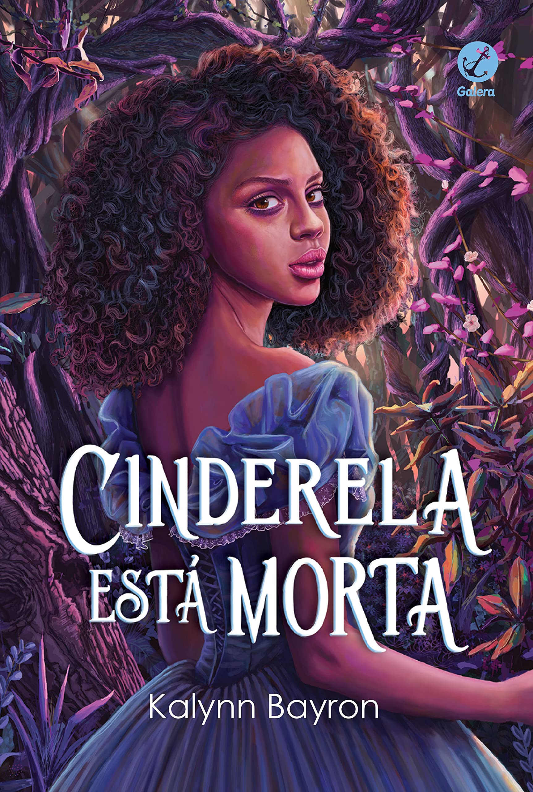 | 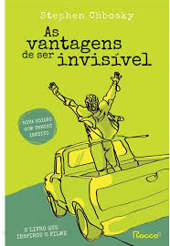 |  |
 |
|
| Enquanto Não te Encontro Pedro Rhuas Emprestado |
Um Milhão de Finais Felizes Vitor Martins Emprestado |
Quinze dias Vitor Martins Emprestado |
A Cinderela está Morta Kalynn Bayron Emprestado |
Vantagens de Ser Invisível Stephen Chbosky Emprestado |
Os Dois Morrem no Final Adam Silvera Emprestado |
A Culpa é das Estrelas John Green Emprestado |
Aristóteles e Dante Benjamin Alire Sáenz Emprestado |
 |
 |
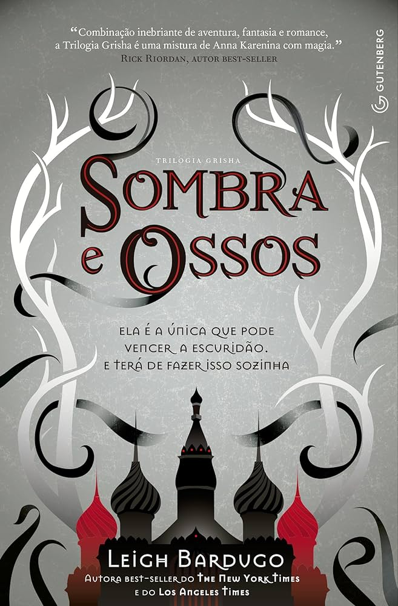 | 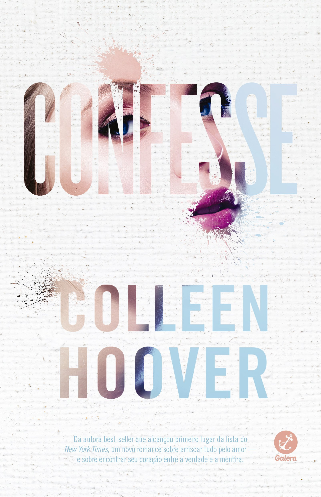 | 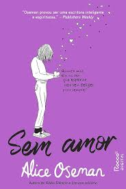 | 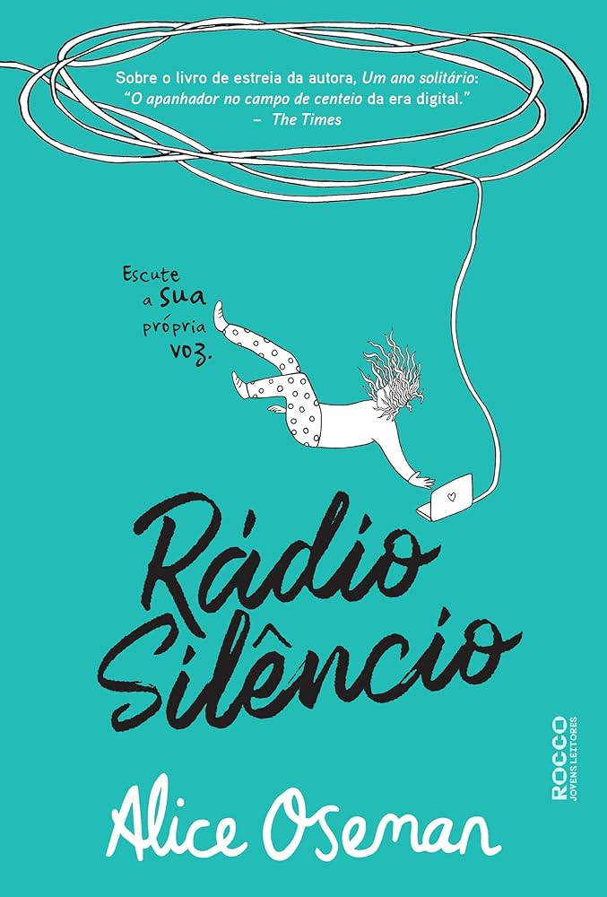 | 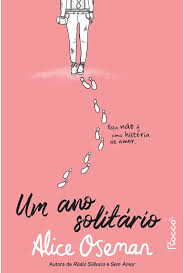 | |
| O Sol Também é uma Estrela Nicola Yoon Emprestado |
Relatos de Um Gato Viajante Hiro Arikawa Emprestado |
1984 George Orwell Emprestado |
Sombra e Ossos Leigh Bardugo Emprestado |
Confissão Colleen Hoover Emprestado |
Sem Amor Alice Oseman Emprestado |
Rádio Silêncio Alice Oseman Emprestado |
Um Ano Solitário Alice Oseman Emprestado |
| 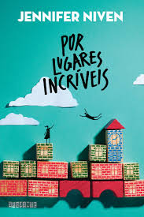 | 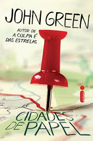 | 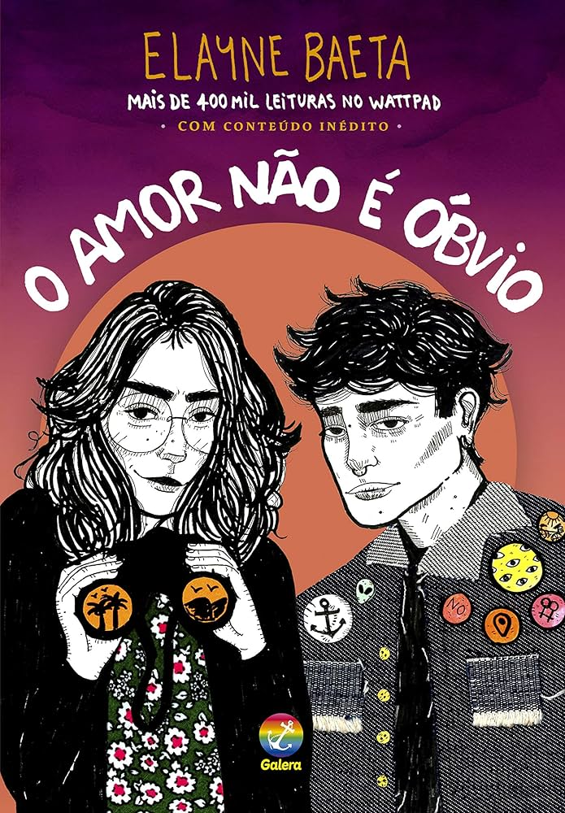 | 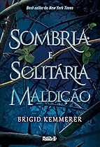 | ||||
| Mentirosos E. Lockhart Emprestado |
Por Lugares Incríveis Jennifer Niven Emprestado |
Cidades de Papel John Green Emprestado |
O Amor Não é Obvio Elayne Baeta Emprestado |
Sombria e Solitária Maldição Brigid Kemmerer Emprestado |
Conectadas Clara Alves Emprestado |
A biblioteca da meia-noite Matt Haig Emprestado |
Bem-vindos à Livraria Hyunam-dong Hwang Bo-reum Emprestado |